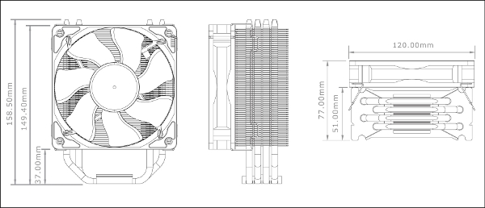
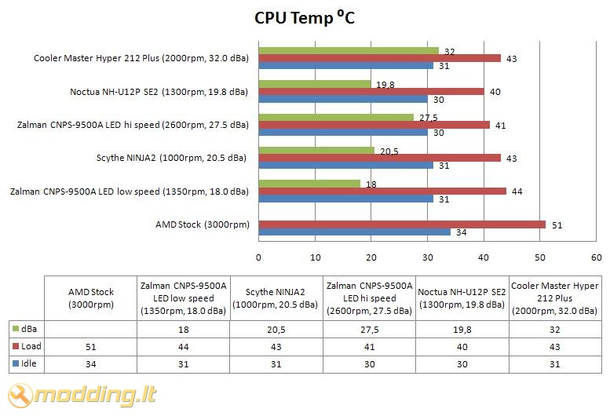

Cooler Master Hyper 212 Plus
 Cooler Master Hyper 212 Plus - tai atnaujinta Hyper 212. Pakeistas radiatoriaus dizainas, šiluma perduodama tiesiogiai į heatpipe vamzdelius, ventiliatorius palaiko PWM reguliavimo funkciją bei skleidžia 13 dBa low rpm rėžime. Šio modelio aušintuvas suderinamas su LGA 1156/1366 bei AM3. Pažiūrėkime, ar atnaujinimai suteiks aušintuvui geresnes aušinimo savybes.
Cooler Master Hyper 212 Plus - tai atnaujinta Hyper 212. Pakeistas radiatoriaus dizainas, šiluma perduodama tiesiogiai į heatpipe vamzdelius, ventiliatorius palaiko PWM reguliavimo funkciją bei skleidžia 13 dBa low rpm rėžime. Šio modelio aušintuvas suderinamas su LGA 1156/1366 bei AM3. Pažiūrėkime, ar atnaujinimai suteiks aušintuvui geresnes aušinimo savybes.
Žvilgsnis iš arčiau
Cooler Master Hyper 212 Plus aušintuvas supakuotas dėžutėje, kurios priekinėje dalyje pavaizduotas Hyper 212 Plus aušintuvas, nurodyti palaikomi socket, paryškinti užrašai Core i7 Compatible, AM3 Compatible bei LGA 1156/1366 Ready. Šoninėse dalyse pateikiamos aušintuvo specifikacijos. Galinėje dalyje pavaizduoti Hyper 212 Plus išmatavimai, sumontuotas aušintuvas bei aprašomos jo ypatybės.
Pakuotės viduje randame:
- Hyper 212 Plus aušintuvą
- tvirtinimo detales AMD ir Intel platformoms
- termopastą
- manual - vartotojo knygeles
- geležinius rėmelius ventiliatoriui tvirtinti
Aušintuvo specifikacijos
- Suderinamumas: socket LGA 775, LGA1156, LGA1366, AM2, AM2+, AM3
- Radiatoriaus išmatavimai: 51(ilgis) x 120(plotis) x 158.5(aukštis) mm
- Bendri išmatavimai: 77(ilgis) x 120(plotis) x 158.5(aukštis) mm
- Ventiliatoriaus išmatavimai: 25(ilgis) x 120(plotis) x 120(aukštis) mm
- Medžiagos: variniai vamzdeliai/aliuminis
- Ventiliatoriaus apsisukimai: 600 - 2000 R.P.M. (PWM)
- Triukšmo lygis: 13 - 32 dBA
- Oro srautas: 21.2 - 76.8 CFM
- Oro spaudimas: 0.40 - 3.90 mmH2O
- Guolis: Long life sleeve
- Ilgaamžiškumas: 40,000 val.
- Jungtis: 4-pin (PWM)
- Svoris: 626g

Hyper 212 Plus aušintuvo radiatorius pagamintas iš 4 šiluminių heatpipe vamzdelių, kurie yra išlenkti U forma. Radiatoriui pagaminti naudotas aliuminis. Radiatoriaus viršuje ir apačioje įspausti Cooler Master logotipai. Apačioje sumontuota plokštelė įrėmina heatpipe vamzdelius. Apačioje heatpipe vamzdeliai suploti, nulygintas jų paviršius - šiuo paviršiumi jie montuojami ant CPU. Šiluma perduodama tiesiogiai į 4 U forma išdėstytus šiluminius heatpipe vamzdelius. Jie šilumą perduoda į 57 aliuminines plokšteles. Kadangi 4 šiluminiai heatpipe vamzdeliai išlenkti U forma, tai kiekviename šone gauname po 4 lygegrečiai išdėstytus vamzdelius. Iš viso pro plokšteles eina 8 vamzdeliai.
Hyper 212 Plus aušintuvo radiatorius, palyginus su kitų gamintojų, yra labai plonas - tik 51.0 mm. Kaip pavyzdį pateikiu kitų modelių pločius: Scythe NINJA - 116 mm; Thermaltake V1 - 92 mm; Noctua NH-U12P SE2 - 71 mm.
Aušintuvas komplektuojamas su 120 x 120 x 25 mm ventiliatoriumi, kurio minimalios apsukos yra 600 rpm. Veikdamas šiuo rėžimu jis skleidžia 13 dBA bei sukuria 21.2 CFM oro srautą. Ventiliatoriaus mentės specifinės formos - tai turėtų pagerinti aušinimo savybes. Šis ventiliatorius palaiko PWM funkciją - jo apsukos gali būti reguliuojamos automatiškai, priklausomai nuo CPU temperatūros. Tai tikrai gera šio gaminio savybė, kadangi PWM leis efektyviai aušinti procesorių bei sumažins dBA lygį.
Ventiliatorius prie radiatoriaus tvirtinamas geležinių rėmelių pagalba: rėmelis užkabinamas už aušintuvo, o vėliau už ant radiatoriaus esančio griovelio. Rėmeliai turi dvi specialias išsikišusias "ausele", kurios žymiai palengvina ventiliatoriaus montavimą. Kadangi montavimo grioveliai yra iš abiejų pusių - ant šio aušintuvo gali būti sumontuoti du ventiliatoriai vienu metu.
Tvirtinimas
Aušintuvą Cooler Master Hyper 212 Plus montavau AM2+ socket'ui. Montuojant šį aušintuvą, reikia nuimti back plate plokštelę. Sumontuojama speciali plokštelė iš komplekto. Prisukami varžtai iš viršaus. Aušintuvo montavimui naudojamas universalus X formos tvirtinimas. Jis gali būti sumontuotas horizontaliai arba vertikaliai, todėl aušintuvas gali būti orentuotas oro srautu į galinę korpuso sienelę arba į viršų.
Užtepame termopastą bei uždedame aušintuvą. Tuomet po truputį, iš visų kraštų paeiliui pradedame užsukinėti varžtus. Svarbu kuo vienodžiau veržti varžtus, nes tuomet aušintuvas prisispaus lygiau. Žemiau pateikiu sumontuotos sistemos foto.
Rezultatai
Testavimo sistema:
- CPU Cooler - Cooler Master Hyper 212 Plus
- Case - Antec Mini P180
- Mainboard - Asus M2N68-AMSE2
- CPU - AMD ATHLON 64 X2 Dual-Core 5000+ AM2 (65W)
- RAM - Corsair DDR2 KIT 2X1G 800MHZ TWIN2X2048-6400 G
- HDD - SEA BARRACUDA 160GB 7200rpm
- PSU - Cooler Master Silent Pro M700
- Case Fans - Noctua NF-S12B FLX 120mm (1200rpm, 100.6 m³/h, 1.31 mm H2O), Antec 200mm TriCool (400rpm, 39 CFM)
Procesoriaus (CPU) temperatūra testuojama Idle ir Load rėžimais. Load rėžimui naudojama Orthos programa. Temperatūros rodmenys stebėti SpeedFan 4.39 bei PC Probe II V1.04.74 programomis. Testavimams naudotas Antec Mini P180 korpusas galinėje sienelėje turi Noctua NF-S12B FLX 120mm orą ištraukiantį aušintuvą (1200rpm, 100.6 m³/h, 1.31 mm H2O), o taip pat viršuje esantį, orą ištraukiantį, Antec 200mm TriCool ventiliatorių (400rpm, 39 CFM). Hyper 212 Plus aušintuvas testuotas maksimaliomis 2000 rpm apsukomis, esant 32 dBA bei 76.8 CFM oro srautui.

Cooler Master Hyper 212 Plus aušintuvo rezultatai geri - jie prilygsta Scythe NINJA 2 rezultatams. Hyper 212 Plus, lyginant jį su AMD Stock aušintuvu, rodo 3 ⁰C žemesnę temperatūrą Idle rėžime, bei 8 ⁰C žemesnę temperatūrą Load rėžime. Svarbu paminėti, kad Hyper 212 Plus aušintuvo radiatoriaus plotis vos 51.0 mm, todėl tokie aušinimo rezultata yra tikrai geri.
Išvados
Pliusai:
- efektyvus aušinimas
- PWM funkcija
- kokybiškai surinktas
- tik 13.0 dBA esant minimalioms apsukoms
- radiatoriaus plotis tik 51.0 mm
- galimybė montuoti vertikaliai arba horizontaliai
- lengvesnis ventiliatoriaus montavimas dėl rėmėlių "auselių"
- kaina (~100 Lt)
Trūkumai:
- montuojant reikia keisti backplate - galinę plokštelę
Minusai:
- 32 dBA esant maksimalioms apsukoms
 Cooler Master Hyper 212 Plus aušintuvas įrodo, kad geram CPU aušinimui masyvūs radiatoriai visai nebūtini. Turėdamas vos 51.0 mm pločio radiatorių, šis aušintuvas parodė gerus CPU aušinimo rezultatus. Aušintuvo montavimo mechanizmas leidžia radiatorių orentuoti vertikaliai arba horizontaliai - taip galėsite pasirinkti oro srauto kryptį, priklausomai nuo korpuso komplektacijos. Ventiliatorius palaikantis PWM funkciją optimizuos triukšmo/apsukų santykį. Nepamirškime smulkmenų - ant rėmėlių esančių "auselių" dėka patogiau montuojamas ventiliatorius. Šis aušintuvas tylus esant žemoms apsukoms, tačiau aukštų apsukų rėžime jis skleidžia nemažai triukšmo - 32 dBA, esant 2000 rpm. Jeigu jūsų PC motininė plokštė nepalaiko PWM, tuomet siūlyčiau įsigyti apsukų reguliatorių ir mechaniškai keisti šio aušintuvo apsukas. Hyper 212 Plus aušintuvą rekomenduočiau vartotojams, turintiems mažesnius korpusus, kadangi jo išmatavimai gerokai mažesni nei kitų, panašaus našumo, aušintuvų. Svarbu paminėti, kad šio aušintuvo kaina, palyginus su kitais testuotais aušintuvais, taipogi mažesnė - ji yra pie 100 Lt.
Cooler Master Hyper 212 Plus aušintuvas įrodo, kad geram CPU aušinimui masyvūs radiatoriai visai nebūtini. Turėdamas vos 51.0 mm pločio radiatorių, šis aušintuvas parodė gerus CPU aušinimo rezultatus. Aušintuvo montavimo mechanizmas leidžia radiatorių orentuoti vertikaliai arba horizontaliai - taip galėsite pasirinkti oro srauto kryptį, priklausomai nuo korpuso komplektacijos. Ventiliatorius palaikantis PWM funkciją optimizuos triukšmo/apsukų santykį. Nepamirškime smulkmenų - ant rėmėlių esančių "auselių" dėka patogiau montuojamas ventiliatorius. Šis aušintuvas tylus esant žemoms apsukoms, tačiau aukštų apsukų rėžime jis skleidžia nemažai triukšmo - 32 dBA, esant 2000 rpm. Jeigu jūsų PC motininė plokštė nepalaiko PWM, tuomet siūlyčiau įsigyti apsukų reguliatorių ir mechaniškai keisti šio aušintuvo apsukas. Hyper 212 Plus aušintuvą rekomenduočiau vartotojams, turintiems mažesnius korpusus, kadangi jo išmatavimai gerokai mažesni nei kitų, panašaus našumo, aušintuvų. Svarbu paminėti, kad šio aušintuvo kaina, palyginus su kitais testuotais aušintuvais, taipogi mažesnė - ji yra pie 100 Lt.
Modding.lt komanda dėkoja UAB "Acme kompiuterių komponentai" atstovams bei Milan Simic iš www.coolermaster.com už apžvalgai suteiktą produktą.
Jei norėsite pakomentuoti mano straipsnį arba pareikšti savo nuomonę, apsilankykite Modding.lt forume.


{kind=link}
{kind=link}
{kind=link}
{kind=link}
{kind=link}
{kind=link}
{kind=link}
{kind=link}
{kind=link}
{kind=link}
{kind=link}
{kind=link}
{kind=link}
{kind=link}
{kind=link}
{kind=link}
{kind=link}
{kind=link}
{kind=link}
{kind=link}
{kind=link}
{kind=link}
{kind=link}
{kind=link}
{kind=link}
{kind=link}